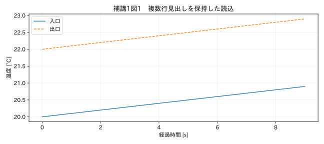
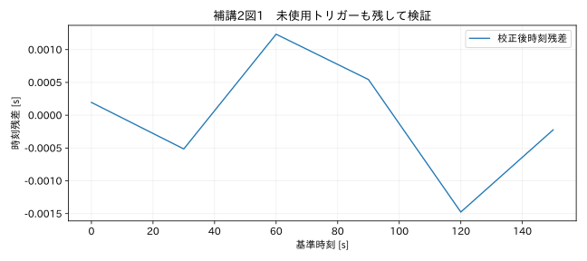
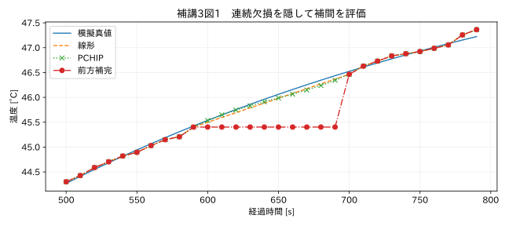
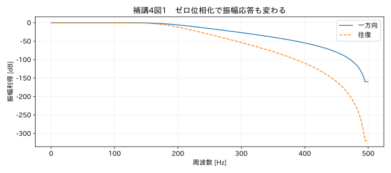
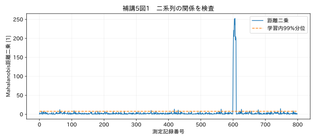
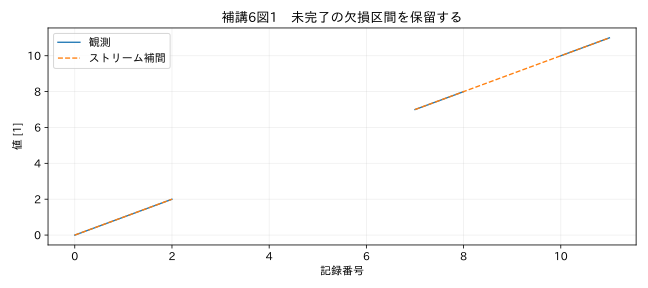

実践補講：判断を数値で確かめる六つの実験
本編の考え方を、別の小さな実験で検証する。各補講は完全なスクリプトを持ち、教材フォルダから単独実行できる。ここで示す乱数種や条件はコードに固定している。新しい処理を最終CLIへ自動的に追加したわけではなく、適用前の検証方法を学ぶための補講である。
補講1 読み込み条件を試験する
目的と問題
第2・3章の読込処理を、文字コード、小数点、複数行見出しの組合せで確認する。目標は、読み込めた数字を眺めるだけでなく、既知の値と一致することをassertで確かめることだ。
CP932のファイルをUTF-8として読めば、文字化けまたは例外が起こる。正しくCP932で読めても、セミコロン区切りを指定しなければ列が分かれない。さらに「1.234,5」を地域設定に合う規則で数値化しなければ、1234.5という値にはならない。三つの条件を個別に確定する必要がある。
手順を分解する
最初に文字列として読み、列名が「時刻」「測定値」であることを確認する。次に桁区切りと小数点を設定して数値へ変換する。最後に既知の1234.5と一致することを検査する。数値化後の図が滑らかかどうかだけでは、1000倍の桁違いを見抜けないことがある。
後半では、一時フォルダに二段見出しのExcelを作る。見出しの候補行を探し、一つだけなら採用する。候補が0でも2以上でもエラーにする。「最初に見つかった行を採用する」より、曖昧さが見える設計である。これは汎用の帳票認識AIではなく、必要な列名が既知である場合の限定したアダプターだ。
複数行見出しを組み合わせて「入口_degC」「出口_degC」とし、測定位置と単位を残す。名称結合後に列名が重複したら停止する。列の順序だけで入口と出口を決めると、帳票改訂で位置が入れ替わった際に誤処理する。
補講1の完全な実行スクリプト：教材フォルダで python examples/lab01/run.py
from pathlib import Path
import sys,json
ROOT=Path(__file__).resolve().parents[2]
sys.path.insert(0,str(ROOT));sys.path.insert(0,str(ROOT/'examples'))
import numpy as np
import pandas as pd
from common import load,truth,seconds,plot
from tsclean.core import numeric,hampel,interpolate_short
from tempfile import TemporaryDirectory
from openpyxl import Workbook
df=pd.read_csv(ROOT/'datasets/raw/locale_cp932.csv',encoding='cp932',sep=';',dtype=str,keep_default_na=False)
v,missing,invalid=numeric(df['測定値'],decimal=',',thousands='.')
assert v.iloc[0]==1234.5
print('CP932 / セミコロン / 小数点カンマ:',v.iloc[0])
with TemporaryDirectory() as folder:
p=Path(folder)/'two_headers.xlsx';wb=Workbook();ws=wb.active
ws.append(['模擬：複数行見出し']);ws.append(['時刻','入口','出口']);ws.append(['s','degC','degC'])
for i in range(10):ws.append([i,20+i*.1,22+i*.1])
wb.save(p)
preview=pd.read_excel(p,header=None,keep_default_na=False)
candidates=[]
for i,row in preview.iterrows():
if {'時刻','入口','出口'}.issubset(set(row.astype(str))):candidates.append(i)
if len(candidates)!=1:raise ValueError('ambiguous/missing header')
data=pd.read_excel(p,header=[candidates[0],candidates[0]+1])
data.columns=['_'.join(map(str,c)) for c in data.columns]
assert data.columns.is_unique and len(data)==10
print('採用したExcel見出し行:',candidates[0]+1,'列:',data.columns.tolist())
plot(25,data['時刻_s'],{'入口':data['入口_degC'],'出口':data['出口_degC']},'温度 [°C]',title='補講1図1 複数行見出しを保持した読込')
実行結果
CP932 / セミコロン / 小数点カンマ: 1234.5
採用したExcel見出し行: 2 列: ['時刻_s', '入口_degC', '出口_degC']

結果と限界
出力は1234.5となり、Excelは10行の測定値を返す。図の入口と出口の差は2 °Cで一定だ。この差が0.002や2000になった場合、単位または数値変換を疑う。プログラムが探す列名は固定なので、名前の変更は設定またはアダプターの更新を必要とする。
三段階演習
- 基礎：上記の値、行数、列名を確認する。
- 応用：同じ見出しを別の位置にも追加し、エラーになることを確認する。
- 実務：入口と出口の列名が同じ「温度」だけだった場合、推測せず確認すべき資料を挙げる。
解答・評価観点
基礎は数値1234.5、10行、測定位置を含む列名との一致が条件。応用は候補が二つになるため停止が正しい。実務では機器チャンネル表、配線図、試験手順、原帳票の上位見出しを確認する。波形の高低だけで入口と出口を決めない。
補講2 同期に使わなかったトリガーで評価する
目的と問題
第8章では正解の時計モデルを使い、補正式の向きと単位を確認した。ここではノイズを含む共通トリガーからa、bを推定し、推定に使わなかった点の残差を調べる。既知の正解をそのまま式へ入れる検証と、観測から推定する検証を区別する。
6個のトリガーのうち4個で直線を当てはめ、残り2個を検証へ回す。設計行列Xの各行を[t,1]とし、係数β=[a,b]を求める。np.linalg.lstsq は残差二乗和が最小となる係数を計算する。R13 ここでの基準側時刻は誤差を無視できると仮定している。両方の時刻が同程度に不確かな場合は、この通常の最小二乗だけで十分とは限らない。
誤差の読み方
独立・等分散の残差という仮定では、残差分散の推定値はSSE/(n−2)、係数の共分散はその値と(XᵀX)⁻¹の積になる。n−2は傾きと切片の二つを推定した自由度を差し引いている。残差が4個しかない教材では推定が不安定になり得る。多くの検証点と、試験期間全体を覆うトリガーを用意する方がよい。
係数の標準誤差が小さくても、時計が途中で補正されたり、温度依存で非線形に変化したりすれば直線モデルは不適切になる。残差を時間軸に描き、弓形や段差がないか確認する。外挿する時間が長いほど予測不確かさも増える。
補講2の完全な実行スクリプト：教材フォルダで python examples/lab02/run.py
from pathlib import Path
import sys,json
ROOT=Path(__file__).resolve().parents[2]
sys.path.insert(0,str(ROOT));sys.path.insert(0,str(ROOT/'examples'))
import numpy as np
import pandas as pd
from common import load,truth,seconds,plot
from tsclean.core import numeric,hampel,interpolate_short
rng=np.random.default_rng(802)
a=np.array([0.,30,60,90,120,150]);b=1.0002*a+.7+rng.normal(0,.001,len(a))
train=np.array([0,1,3,5]);hold=np.array([2,4])
X=np.column_stack([a[train],np.ones(len(train))]);beta=np.linalg.lstsq(X,b[train],rcond=None)[0]
res=b[train]-X@beta;s2=res@res/(len(train)-2);cov=s2*np.linalg.inv(X.T@X)
corrected=(b-beta[1])/beta[0];err=corrected-a
print('a,bの推定:',beta.tolist(),'傾き標準誤差:',float(np.sqrt(cov[0,0])))
print('未使用トリガー最大残差 [s]:',float(np.max(np.abs(err[hold]))))
assert np.max(np.abs(err[hold]))<.005
# Grid-only reindex drops actual off-grid anchors. Union preserves them.
t0=pd.Timestamp('2026-01-01',tz='UTC')
observed=pd.Series([0.,2.,5.],index=t0+pd.to_timedelta([0.,1.3,3.2],unit='s'))
grid=pd.date_range(t0,periods=4,freq='s')
union=observed.index.union(grid).sort_values()
aligned=observed.reindex(union).interpolate(method='time',limit_area='inside').reindex(grid)
print('元観測を残すunion補間:',aligned.tolist())
assert np.isclose(aligned.iloc[1],2/1.3)
plot(26,a,{'校正後時刻残差':err},'時刻残差 [s]',xlabel='基準時刻 [s]',title='補講2図1 未使用トリガーも残して検証')
実行結果
a,bの推定: [1.0002064203872216, 0.6991862941812177] 傾き標準誤差: 4.940153092494276e-06
未使用トリガー最大残差 [s]: 0.0014760955550201516
元観測を残すunion補間: [0.0, 1.5384615384615385, 3.105263157894737, 4.684210526315789]

ずれた時刻を等間隔へそろえるとき
後半のコードでは、観測点0秒、1.3秒、3.2秒を、0、1、2、3秒の格子へ変換する。観測点を格子へ直接reindexすると1.3秒と3.2秒の実測点が失われるため、元の時刻と格子の和集合を作ってから補間し、最後に格子だけを取り出す。1秒の値は2/1.3となる。実務ではこの操作の前に、長い空白やモード境界を分ける必要がある。
三段階演習
- 基礎：係数推定値と未使用トリガーの最大残差を確認する。
- 応用：検証点だけに10 msの時刻ずれを加えたとき、学習内残差と検証残差のどちらへ現れるか。
- 実務：試験開始付近の10秒間だけで時計ドリフトを求め、24時間先を補正してよいか。
解答・評価観点
基礎ではaが1.0002、bが0.7の近傍に推定され、未使用点も数ms以内となる。応用は学習に使わない点なので、学習内の適合度だけでは異常を見落とす。実務では長い外挿になるため、終了時を含むトリガーや独立時計を用い、全期間の残差を確認する。
補講3 補間の方法を競わせる前に評価条件をそろえる
目的と問題
第10章の停止教材から、測定済みのrun区間を二つ選び、それぞれ10点を隠す。前方補完、線形、PCHIP、三次スプライン、局所三次多項式を同じ隠した点で比較する。模擬真値があるためRMSEと最大絶対誤差を計算できる。
PCHIPは観測データの単調性を保つ形状保存補間で、一階微分が連続になる。R11 CubicSplineは区分的な三次式をつなぎ、二階微分まで連続にする。R12 滑らかさの条件が違うので、過渡区間やノイズに対する形も変わる。
学習と評価を分離する
隠した点を補間の入力へ残したまま誤差を計算すれば、ほぼゼロになるが検証にはならない。コードでは train = valid & ~mask とし、隠した位置を明示的に除外する。評価もそのmaskの位置だけで行う。もともとの停止中の欠損を真値で埋めて正解にするのではない。
局所三次多項式は欠損の前後5点ずつを使う。時刻から原点を引き100秒で割って、数値の大きさを抑える。大きな絶対日時の値をそのまま高次多項式へ入れると数値条件が悪くなる。次数を上げれば誤差が必ず減るわけではなく、観測ノイズを追って補間区間が振動する場合がある。
補講3の完全な実行スクリプト：教材フォルダで python examples/lab03/run.py
from pathlib import Path
import sys,json
ROOT=Path(__file__).resolve().parents[2]
sys.path.insert(0,str(ROOT));sys.path.insert(0,str(ROOT/'examples'))
import numpy as np
import pandas as pd
from common import load,truth,seconds,plot
from tsclean.core import numeric,hampel,interpolate_short
from scipy.interpolate import PchipInterpolator,CubicSpline
df=load('07_modes');t=seconds(df);x=df['測定値'].to_numpy();target=truth('07_modes').latent_signal.to_numpy()
valid=np.isfinite(x);mask=np.zeros(len(x),bool);mask[60:70]=True;mask[350:360]=True
train=valid & ~mask;known_t=t[train];known_x=x[train]
linear=np.interp(t,known_t,known_x)
ffill=pd.Series(x).mask(mask).ffill().to_numpy()
pchip=PchipInterpolator(known_t,known_x,extrapolate=False)(t)
cubic=CubicSpline(known_t,known_x,extrapolate=False)(t)
poly=np.full(len(x),np.nan)
for lo,hi in [(60,70),(350,360)]:
idx=np.r_[np.arange(lo-5,lo),np.arange(hi,hi+5)]
origin=t[lo];coef=np.polyfit((t[idx]-origin)/100,x[idx],3)
poly[lo:hi]=np.polyval(coef,(t[lo:hi]-origin)/100)
for name,y in [('ffill',ffill),('linear',linear),('pchip',pchip),('cubic_spline',cubic),('local_cubic_polynomial',poly)]:
err=y[mask]-target[mask]
print(name,'RMSE [degC]=',round(float(np.sqrt(np.mean(err**2))),6),'max abs=',round(float(np.max(np.abs(err))),6))
print('この比較はrun区間の人工欠損のみ。停止中を橋渡しする推定は採用しない。')
plot(27,t[50:80],{'模擬真値':target[50:80],'線形':linear[50:80],'PCHIP':pchip[50:80],'前方補完':ffill[50:80]},'温度 [°C]',title='補講3図1 連続欠損を隠して補間を評価')
実行結果
ffill RMSE [degC]= 0.751345 max abs= 1.3009
linear RMSE [degC]= 0.051386 max abs= 0.080559
pchip RMSE [degC]= 0.067146 max abs= 0.10724
cubic_spline RMSE [degC]= 0.100842 max abs= 0.176305
local_cubic_polynomial RMSE [degC]= 0.050882 max abs= 0.061182
この比較はrun区間の人工欠損のみ。停止中を橋渡しする推定は採用しない。

結果を一般化しない
この二つのrun区間で良かった方法が、停止境界や圧力ピークでも良いとは限らない。コードは比較用の候補曲線を全時刻で計算するが、採用対象は隠したrun区間に限定する。停止中の空白に候補曲線が計算されても、実測や承認補間として出力しない。業務化する際は、先に区間を分割して処理そのものを限定する。
RMSEは平均的な誤差、最大絶対誤差は局所的に最も悪い点を見る。一つの大きな誤差が合否を変えるなら、RMSEだけで方式を選ばない。隠す長さと運転条件を複数変え、方式の選択に使っていない区間でも再評価する。
三段階演習
- 基礎：5方式のRMSEと最大絶対誤差を並べる。
- 応用：隠す長さを20点へ増やし、方法の順位が変わるか確認する。
- 実務：実際の欠損が高温時だけに発生する。低温run区間の隠し試験で最良の方法を採用してよいか。
解答・評価観点
基礎・応用の数値は生成条件に依存するため、掲載出力と変更後出力を比較する。最も滑らかな方法が最も正確とは限らない。実務では欠損条件と評価条件が一致していない。高温域の独立測定、欠損原因、上限超過の可能性を確認し、適用できない場合は欠損として残す。
補講4 校正係数の相関とフィルタ利得
目的と問題
校正で傾きaと切片bを推定すると、両者は一般に独立ではない。切片を少し大きくした分を傾きの減少で補うような関係が生じる。第13章の不確かさ伝播を、共分散を含む式で計算し、モンテカルロ計算と比較する。
校正の既知入力を0〜3 MPa、観測を1.02x+0.02に小さな正規ノイズを加えたものとする。既知入力の不確かさはこの実験では無視し、観測側の誤差は独立・等分散と仮定する。これは校正一般の完全なモデルではない。
共分散を使う
補正結果g(a,b,z)=(z−b)/aに対する感度係数は、aについて−(z−b)/a²、bについて−1/a、zについて1/aである。a、bの共分散行列をC、前二つの感度を並べたベクトルをdとすると、係数由来の分散はdᵀCdとなる。さらに独立とした新しい測定値zの分散をa²で割って加える。
モンテカルロでは推定したa、bの相関を保って組を生成し、同時に測定値zもばらつかせ、毎回補正式へ入れる。結果の標準偏差が一次近似と近いことを確認する。これは採用した確率モデル同士の比較であり、実測の不確かさを新しく実証する試験ではない。
補講4の完全な実行スクリプト：教材フォルダで python examples/lab04/run.py
from pathlib import Path
import sys,json
ROOT=Path(__file__).resolve().parents[2]
sys.path.insert(0,str(ROOT));sys.path.insert(0,str(ROOT/'examples'))
import numpy as np
import pandas as pd
from common import load,truth,seconds,plot
from tsclean.core import numeric,hampel,interpolate_short
from scipy.signal import butter,sosfreqz
rng=np.random.default_rng(1304)
reference=np.linspace(0,3,9);z=1.02*reference+.02+rng.normal(0,.004,len(reference))
X=np.column_stack([reference,np.ones(len(reference))]);ab=np.linalg.lstsq(X,z,rcond=None)[0]
res=z-X@ab;cov=(res@res/(len(z)-2))*np.linalg.inv(X.T@X)
measurement=1.55;estimate=(measurement-ab[1])/ab[0]
grad=np.array([-(measurement-ab[1])/ab[0]**2,-1/ab[0]])
u_measure=.005;variance=grad@cov@grad+(u_measure/ab[0])**2
draw=rng.multivariate_normal(ab,cov,size=50000);meas=rng.normal(measurement,u_measure,len(draw));mc=(meas-draw[:,1])/draw[:,0]
print('推定圧力 [MPa]:',estimate,'一次伝播の標準不確かさ:',np.sqrt(variance),'MC標準偏差:',mc.std(ddof=1))
print('MC 2.5/97.5分位:',np.quantile(mc,[.025,.975]).tolist())
assert abs(mc.std(ddof=1)/np.sqrt(variance)-1)<.03
sos=butter(4,180,fs=1000,output='sos');f,h=sosfreqz(sos,worN=2048,fs=1000)
at=np.argmin(np.abs(f-180));print('180Hz付近 一方向/往復 [dB]:',20*np.log10(abs(h[at])),40*np.log10(abs(h[at])))
plot(28,f,{'一方向':20*np.log10(np.maximum(abs(h),1e-8)),'往復':40*np.log10(np.maximum(abs(h),1e-8))},'振幅利得 [dB]',xlabel='周波数 [Hz]',title='補講4図1 ゼロ位相化で振幅応答も変わる')
実行結果
推定圧力 [MPa]: 1.4992964877731711 一次伝播の標準不確かさ: 0.005164351489390662 MC標準偏差: 0.005162463154786354
MC 2.5/97.5分位: [1.489169439505234, 1.5093434532237178]
180Hz付近 一方向/往復 [dB]: -3.002060699948948 -6.004121399897896

図で見る一方向と往復
後半は180 HzカットオフのButterworthの応答を計算する。図では一方向の振幅利得に対し、往復はdB値が約2倍の減衰になる。位相遅れを消す代わりに、振幅への作用も変わっている。180 Hz付近の−3 dBと−6 dBの差を確認する。
三段階演習
- 基礎：一次伝播とモンテカルロの標準偏差の相対差を確認する。
- 応用：共分散の非対角成分を0にすると推定不確かさがどう変わるか調べる。
- 実務：基準器の不確かさが観測側と同程度ある場合、このコードの前提をどう変えるか。
解答・評価観点
基礎は演習設定で3%以内の一致をassertしている。応用の増減は感度係数と共分散の符号に依存し、常に大きくなるとは限らない。実務では入力側誤差と基準器の共通偏りをモデルへ加え、誤差変数モデルや適切なモンテカルロ入力を検討する。既知入力を誤差なしとする通常最小二乗のまま結論しない。
補講5 二系列の関係が崩れた点を探す
目的と問題
単独では許容範囲に入る二つの値でも、関係が崩れていることがある。例えば同じ入力を測る二つの測定系なら、既知の感度比から大きく外れる組は確認対象になる。本補講は連続した物理波形ではなく、平衡状態での独立な対測定800回を想定した無次元の模擬データである。記録番号を時間と解釈して周波数解析しない。
前半400組を基準として平均ベクトルμと共分散Sを求める。距離二乗を D²=(x−μ)ᵀ S⁻¹ (x−μ) とする。共分散によって、通常の関係に沿う変動は小さく、関係を横切る変動は大きく評価される。コードのeinsumはこの二次形式を各行に適用する行列表現である。
閾値と前提
基準データ内の距離の99%分位を演習の閾値にする。この設定は未知のデータの誤警報率が厳密に1%になることを保証しない。学習分布が変化すれば候補は増え、学習データに異常が混ざれば基準自体がゆがむ。正規分布の理論的距離と、有限標本から共分散を推定した距離の分布も区別する。
二列が完全に比例していれば共分散は特異になり、通常の逆行列が求まらない。条件数が大きい場合も、測定ノイズのわずかな違いに敏感になる。単純に疑似逆行列へ置き換えれば問題が消えるわけではない。物理的な関係から残差 b−(2a) を直接評価する方が説明しやすい場合がある。
補講5の完全な実行スクリプト：教材フォルダで python examples/lab05/run.py
from pathlib import Path
import sys,json
ROOT=Path(__file__).resolve().parents[2]
sys.path.insert(0,str(ROOT));sys.path.insert(0,str(ROOT/'examples'))
import numpy as np
import pandas as pd
from common import load,truth,seconds,plot
from tsclean.core import numeric,hampel,interpolate_short
rng=np.random.default_rng(1705)
n=800;t=np.arange(n,dtype=float);common=rng.normal(size=n)
a=10+common+rng.normal(0,.03,n);b=20+2*common+rng.normal(0,.04,n)
b[600:610]+=1.0
data=np.column_stack([a,b]);train=data[:400];mu=train.mean(axis=0);cov=np.cov(train,rowvar=False)
inverse=np.linalg.inv(cov);delta=data-mu
d2=np.einsum('ij,jk,ik->i',delta,inverse,delta)
train_d2=d2[:400];threshold=np.quantile(train_d2,.99)
flag=d2>threshold
print('学習内99%分位（普遍閾値ではない）:',threshold)
print('注入区間検出:',int(flag[600:610].sum()),'/10','それ以外の検証区間候補:',int(flag[400:600].sum()+flag[610:].sum()))
print('2列の相関:',np.corrcoef(train,rowvar=False)[0,1],'共分散の条件数:',np.linalg.cond(cov))
assert flag[600:610].all()
folder=ROOT/'datasets/supplementary';folder.mkdir(exist_ok=True)
pd.DataFrame({'t_s':t,'a':a,'b':b,'injected_relation_error':(t>=600)&(t<610),'seed':1705}).to_csv(folder/'multivariate.csv',index=False)
plot(29,t,{'距離二乗':d2,'学習内99%分位':np.full(n,threshold)},'Mahalanobis距離二乗 [1]',xlabel='測定記録番号',title='補講5図1 二系列の関係を検査')
実行結果
学習内99%分位（普遍閾値ではない）: 7.854975886436315
注入区間検出: 10 /10 それ以外の検証区間候補: 11
2列の相関: 0.9992701351900295 共分散の条件数: 4268.7947963443075

検出した後
600〜609番には関係を崩す変化を注入している。全10組が候補になっても、データを削除せず保持する。基準に用いなかったその他の点が何個候補になったかも報告する。多変量検出は「片方のセンサーが誤り」と診断する機能ではなく、両者の関係を調べるきっかけである。
三段階演習
- 基礎：注入10点の検出数と、それ以外の検証区間の候補数を確認する。
- 応用：二列の単位スケールを変え、共分散も同じデータで計算した場合の距離を比較する。
- 実務：運転モードが二つあり、モードごとに正常な感度比が異なる。全データで一つの共分散を作ってよいか。
解答・評価観点
基礎は注入全10点を検出するが、その他の候補もゼロとは限らない。応用は理想的な可逆線形スケール変換では距離が保たれるが、数値条件に注意する。実務はモード別の関係をモデル化するか、条件を説明変数に含める。二つの正常集団を一つの楕円へ押し込めて判断しない。
補講6 チャンク境界で検出結果を変えない
目的と問題
第21章で説明した境界の問題を、Hampelと補間で実験する。5000点の系列の1023、1024、2048番にスパイクを置く。チャンクサイズ1024はこの境界を意図的にまたぐ。各チャンクだけに11点窓をかけると、境界近くは完全な窓を持てず見逃す。
窓の重なりを持つ
窓半幅5点を左右に付けて計算し、出力はそのチャンクが担当する部分だけへ切り戻す。重複領域を二度出力しない。全量処理と、候補フラグだけでなく中央値と尺度まで一致することを比較する。この例は配列を分割して境界の正しさを確認しており、CSVをメモリ外で読む完成済みストリーミング基盤ではない。
欠損区間の終わりを待つ
補間は次の有効観測が来るまで、欠損の時間幅が確定しない。入力を一行ずつ受ける関数では、最後の有効値と未解決の欠損を保留する。次の有効値が届いたら、同一セグメントと時間幅を検査し、全区間を補間するか残すか決める。末尾まで有効値が来なければ、その欠損はそのまま出す。
補講6の完全な実行スクリプト：教材フォルダで python examples/lab06/run.py
from pathlib import Path
import sys,json
ROOT=Path(__file__).resolve().parents[2]
sys.path.insert(0,str(ROOT));sys.path.insert(0,str(ROOT/'examples'))
import numpy as np
import pandas as pd
from common import load,truth,seconds,plot
from tsclean.core import numeric,hampel,interpolate_short
from tsclean.streaming import chunked_hampel,stream_interpolate
rng=np.random.default_rng(2106);x=1+.001*rng.normal(size=5000);x[[1023,1024,2048]]=4
whole=hampel(x,11,k=3.5,floor=.01);chunks=chunked_hampel(x,1024,11,3.5,.01)
pd.testing.assert_frame_equal(whole,chunks)
print('全量と重なりチャンクのフラグ・中央値・尺度：全点一致')
t=pd.Series(pd.date_range('2026-01-01',periods=12,freq='s',tz='UTC'))
v=np.arange(12,dtype=float);v[3:7]=np.nan;v[9]=np.nan
records=((tm,value,0) for tm,value in zip(t,v))
rows=list(stream_interpolate(records,3));ys=np.array([row[1] for row in rows]);filled=np.array([row[3] for row in rows])
batch,mask=interpolate_short(t,v,max_gap_seconds=3)
np.testing.assert_allclose(ys,batch,equal_nan=True);assert filled.sum()==1
print('境界をまたぐ4点欠損は全体として残し、1点欠損だけ補間。')
plot(30,np.arange(len(v)),{'観測':v,'ストリーム補間':ys},'値 [1]',xlabel='記録番号',title='補講6図1 未完了の欠損区間を保留する')
実行結果
全量と重なりチャンクのフラグ・中央値・尺度：全点一致
境界をまたぐ4点欠損は全体として残し、1点欠損だけ補間。

制約を隠さない
この簡易関数の保留メモリは、未解決の欠損長に比例する。任意に長い欠損に対して定数メモリで動くとは主張しない。実用化では許容時間を超えた時点で補間不採用を確定して順次出力し、長い欠損の状態だけを保持する設計が考えられる。
また、この拡張関数はすべてのNaNを補間候補として受ける。最終CLIのようにinvalid_token、停止、疑わしい両端を除くには、呼出側で区間・適格性を定義する必要がある。検出候補をNaNに変えて自動で修復する機能ではない。
三段階演習
- 基礎：全量とチャンクのHampel結果が全点一致することを確認する。
- 応用：チャンクサイズを7にし、窓11より短くても重なりで一致するか確認する。
- 実務：補間待ちの区間が一週間続く装置を、メモリを増やさず運用するにはどんな状態管理が必要か。
解答・評価観点
基礎・応用はチャンク担当部分だけを採用すれば一致する。補間例では4点連続欠損を残し、1点欠損だけを埋める。実務では許容時間を超えた欠損は不採用と確定して順次出力し、次の有効値まで「長い欠損中」の状態を保持する。再起動時にその状態を復元する仕組みも検討する。